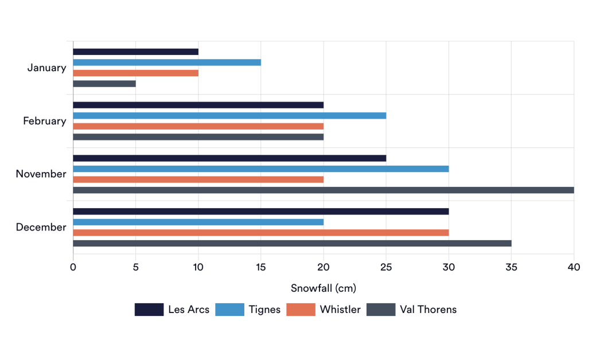
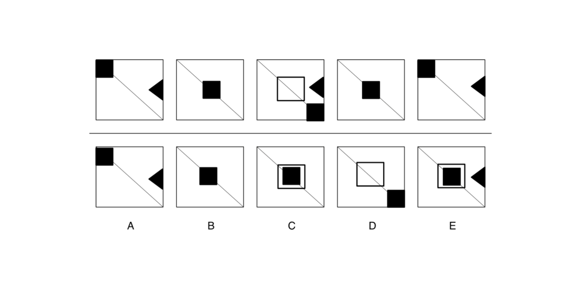
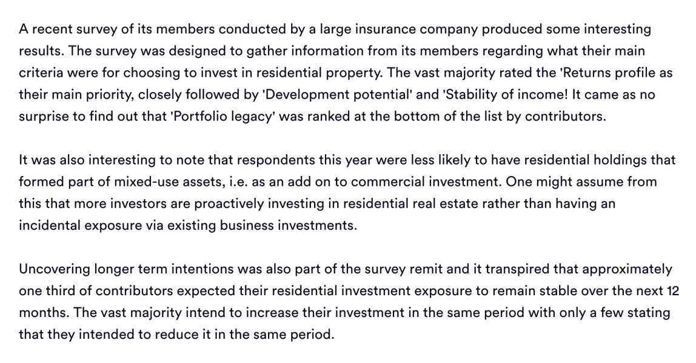
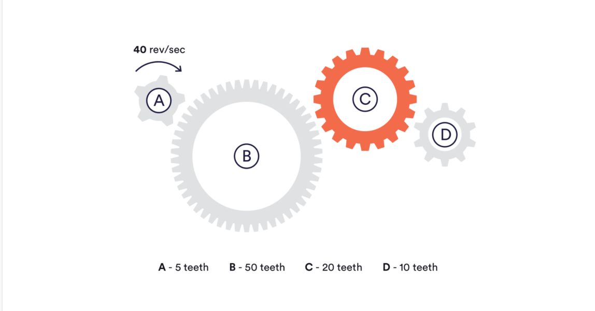

Aptituda Give You Free Aptitude Test Sample Questions and Answers
An aptitude test is an assessment that is used to measure a candidate’s cognitive ability or behaviour in workplace scenarios. Aptitude tests are frequently used by companies to improve the quality of their hiring.
There are a range of different aptitude tests, each assessing a different skill or competency. The most widely used aptitude tests are numerical reasoning, verbal reasoning, logical reasoning, and situational judgement.
Typically, no prior knowledge is needed to complete an aptitude test. But practicing sample questions will get you familiar with the format and question styles, which will give you greater confidence when taking a real test.
So why not try out some free sample questions below? Don’t forget to review the answers and solutions at the end of the page, so you can see where you went wrong, and what you might need to focus on.
Sample numerical reasoning test question
What was the percentage increase in snowfall in Whistler from November to December?
- 30%
- 40%
- 50%
- 60%
Sample logical reasoning test question
Which of the boxes comes next in the sequence?
Sample verbal reasoning test question
Statement: Business owners who have commercial premises often tend to have a residential property as part of their portfolio.
- True
- False
- Cannot tell
Sample verbal reasoning test question
Statement: Business owners who have commercial premises often tend to have a residential property as part of their portfolio.
- True
- False
- Cannot tell
Sample mechanical reasoning test question
- 5
- 10
- 20
- 40
Sample situational judgement test question
Passage : You recently submitted a paper to an upcoming professional conference that will be attended by many people from your industry and from universities globally. You have attended the conference in the past and it is very well attended and highly regarded in the industry. The paper is a summary of some very complex research you have been undertaking with some key findings that you believe people will find very interesting and useful. Upon learning that it has been accepted, your manager asks you to think about how you will present your findings in order to make the biggest impact. You only have a short time slot for your presentation. How would you respond?
Read the passage and select two answers, for how you would most likely and least likely respond.
- Say that you intend to use a lot of graphics and images to try and draw out a handful of key messages.
- Say that you intend to create a presentation that mirrors the wider research paper that you wrote with similar section headers.
- Ask your manager what they think would be the best approach to use based on their experience.
- Say that you will spend a small amount of time introducing your approach to the research but will mainly discuss your key findings and conclusions.
Answers & Solutions
Sample numerical reasoning test question
Answer: 3) 50%
- Solution:
- Identify how much snow fell in Whistler in November and December (Nov = 20cm & Dec = 30cm)
- Calculate the difference between the two months: 30 - 20 = 10
- Divide the difference by November (original figure) and multiply by 100: 10/20 x 100 = 50%
Sample logical reasoning test question
Answer: C
Solution: Squares move from the top left to the middle, then to the bottom right corner with each turn. Unshaded squares appear in every third turn. Triangle appears with every alternate turn.
Therefore, the black square and unshaded square should both be in the middle, with no triangle.
Sample verbal reasoning test question
Answer: Cannot tell
Solution: From the passage, we know that people in this survey are less likely to have ‘mixed-use assets’ (an add-on to commercial investment). Our immediate reaction may therefore be to select false, but the passage is only telling us that people in the survey are less likely to have residential holdings that form part of mixed-use assets.
We don’t know if business owners tend to have residential property as part of their portfolio, so the answer is ‘cannot tell’. It is easy to get tripped up on questions like these, so ensure you read the passage carefully.
Sample mechanical reasoning test question
Answer: 10
Solution: If cog A with 5 teeth can do a full revolution a second, then cog C with 20 teeth will take 4 times as long to do a full revolution. So to find the answer you need to divide 40 by 4.
Sample situational judgement test question
Answer: The most effective response is number 4, and the least effective is number 3.
Solution : The third option is the least effective, as you’re not showing any original thought by simply asking for their advice. Option 4 is best, since the key findings are what you believe will be of greatest interest to the audience, so it makes sense to focus on them.